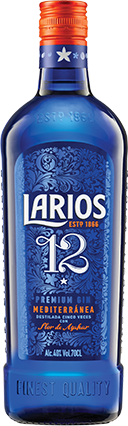
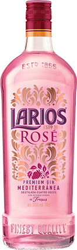
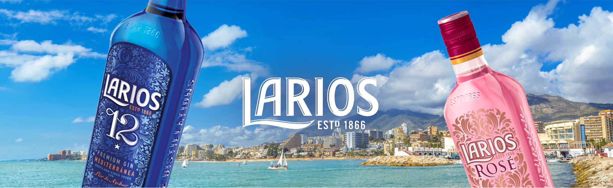
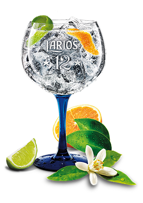
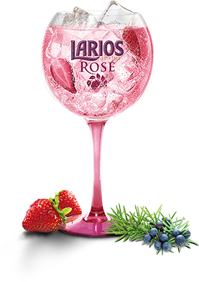

Aktualności
Produkty
Nagrody
Aktywności
Edukacja
Zasady
Regulamin
JIM BEAM
MAKER'S MARK
AUCHENTOSHAN AMERICAN OAK
DUBLINER
Poznaj Larios i odkryj, jak pierwszy hiszpański gin zachwyca świeżą i czystą esencje swojego rodzinnego Morza Śródziemnego. "Duch Śródziemnomorski" prezentuje szczególny sposób życia, odczuwania radości ze spotkań w towarzystkie wyśmienitego trunku.
Historia Larios naznaczona jest wielkiemi kamieniami milowymi, które nakreśliły charakter i tożsamość marki, a także doprowadziły do zyskania prestiżowych, międzynarodowych nag©ód SIP oraz nagrody DBA Design za projekt opakowania w stylu śródziemnomorskim. Poczatki Lariosa sięgaja 1866 roku, kiedy francuzki przesiębiorca Charles Lamothe i hego hiszpański współpracownik Pedro Jimenez (Jimenez & Lamotne) założyli destylację w Maladze.
DUCH ŚRÓDZIEMNOMORSKI


LARIOS 15
Larios 12 to doskonałej jakości gin Premium, który powstaje z egzotycznej kombinacji 12 gatunków botanicznych pozyskiwanych bezpośrednio z natury, z których 7 to cytrusy.
Więcej informacji

STWORZONY DO DRINKÓW
 Larios Gin & Tonic
 Larios Rose Gin & Lemonade
Przepis